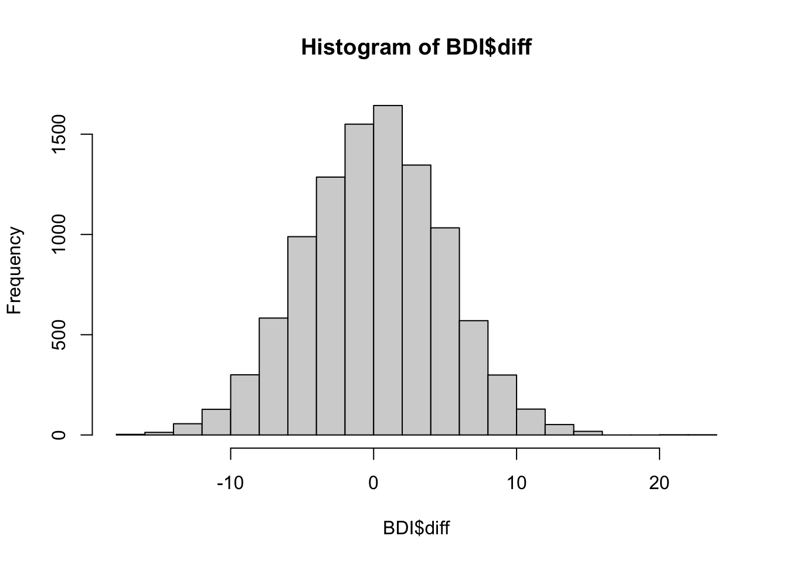
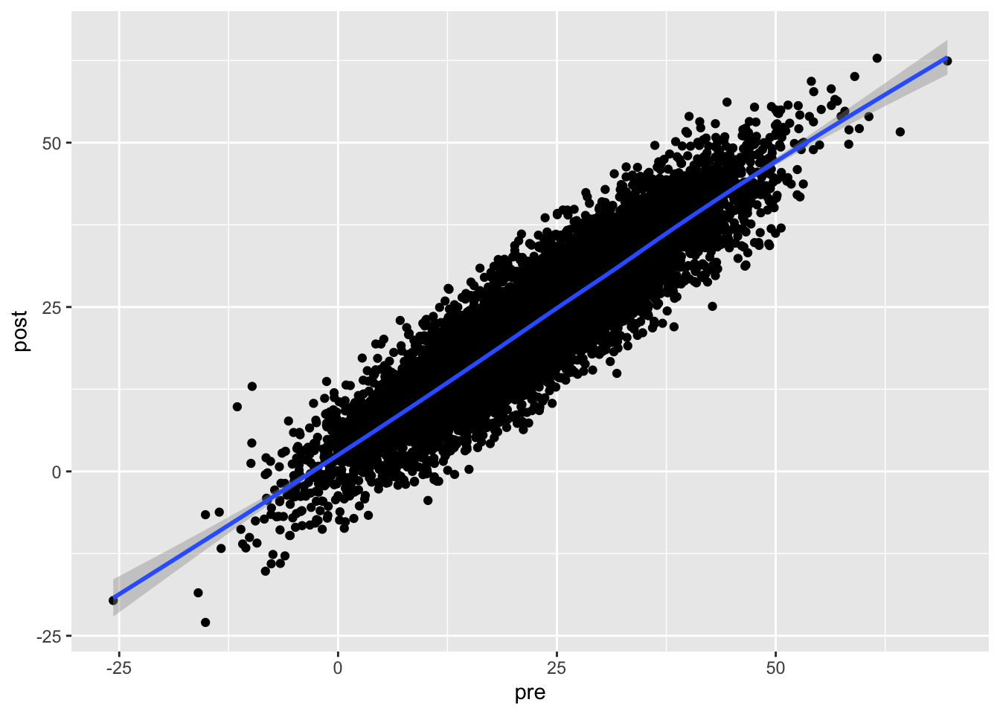
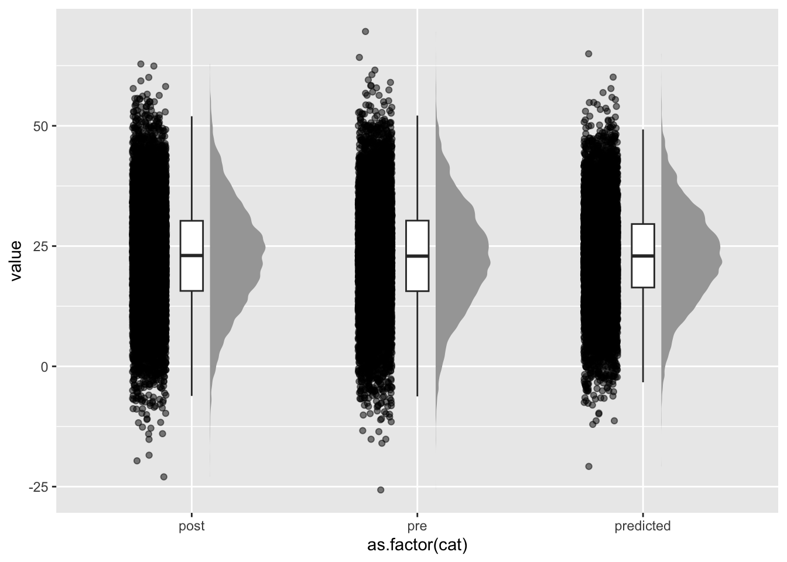

library(Rfast)Lade nötiges Paket: RcppLade nötiges Paket: RcppZiggurat n <- 10000
pre_post_cor <- 0.9
mu <- c(23, 23)
sigma <- matrix(c(117, pre_post_cor*sqrt(117)*sqrt(117), pre_post_cor*sqrt(117)*sqrt(117), 117), nrow=2, byrow=TRUE)
BDI <- rmvnorm(n, mu, sigma) |> data.frame()
xi <- rnorm(n, mean=23, sd=sqrt(117))
pre <- 1*xi + rnorm(n, mean=0, sd=2)
post <- 1*xi + rnorm(n, mean=0, sd=2)
cor(pre, post)[1] 0.9679785 colMeans(BDI) X1 X2
22.92187 22.95114 var(BDI) X1 X2
X1 118.0560 106.2575
X2 106.2575 118.1335 names(BDI) <- c("pre", "post")
BDI$id <- 1:nrow(BDI)
summary(lm(post~pre, BDI))
Call:
lm(formula = post ~ pre, data = BDI)
Residuals:
Min 1Q Median 3Q Max
-16.0754 -3.2091 0.0313 3.2705 19.4456
Coefficients:
Estimate Std. Error t value Pr(>|t|)
(Intercept) 2.320078 0.110740 20.95 <2e-16 ***
pre 0.900060 0.004366 206.17 <2e-16 ***
---
Signif. codes: 0 '***' 0.001 '**' 0.01 '*' 0.05 '.' 0.1 ' ' 1
Residual standard error: 4.743 on 9998 degrees of freedom
Multiple R-squared: 0.8096, Adjusted R-squared: 0.8096
F-statistic: 4.251e+04 on 1 and 9998 DF, p-value: < 2.2e-16 library(tidyr)
library(ggplot2)
BDI_long <- pivot_longer(BDI, c(pre, post), names_to = "time")
ggplot(BDI_long, aes(x=time, y=value, group=id)) + geom_line()
# typically RTM pattern: The pre-post difference is
BDI$diff <- BDI$post-BDI$pre
BDI$absdiff <- abs(BDI$post-BDI$pre)
hist(BDI$diff)
mean(BDI$diff)[1] 0.02927231 summary(lm(diff~pre, BDI))
Call:
lm(formula = diff ~ pre, data = BDI)
Residuals:
Min 1Q Median 3Q Max
-16.0754 -3.2091 0.0313 3.2705 19.4456
Coefficients:
Estimate Std. Error t value Pr(>|t|)
(Intercept) 2.320078 0.110740 20.95 <2e-16 ***
pre -0.099940 0.004366 -22.89 <2e-16 ***
---
Signif. codes: 0 '***' 0.001 '**' 0.01 '*' 0.05 '.' 0.1 ' ' 1
Residual standard error: 4.743 on 9998 degrees of freedom
Multiple R-squared: 0.04981, Adjusted R-squared: 0.04971
F-statistic: 524.1 on 1 and 9998 DF, p-value: < 2.2e-16 ggplot(BDI, aes(x=pre, y=absdiff)) + geom_point() + geom_smooth()`geom_smooth()` using method = 'gam' and formula = 'y ~ s(x, bs = "cs")'
ggplot(BDI, aes(x=pre, y=post)) + geom_point() + geom_smooth()`geom_smooth()` using method = 'gam' and formula = 'y ~ s(x, bs = "cs")'
BDI$predicted <- predict(lm(post~pre, BDI))
mean(BDI$predicted)[1] 22.95114 var(BDI$predicted)[1] 95.63817 # The predicted values have the same mean (so no systematic treatment effect, as expected)
# but much smaller variance:
BDI_long2 <- pivot_longer(BDI, c(pre, post, predicted), names_to = "cat")
library(ggplot2)
ggplot(BDI_long2, aes(x=as.factor(cat), y=value)) +
ggdist::stat_halfeye(adjust = .5, width = .3, .width = 0, justification = -.3, point_colour = NA) +
geom_boxplot(width = .1, outlier.shape = NA) +
gghalves::geom_half_point(side = "l", range_scale = .4, alpha = .5)